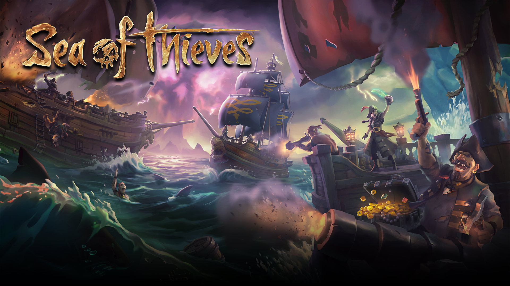
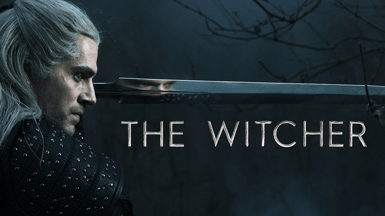
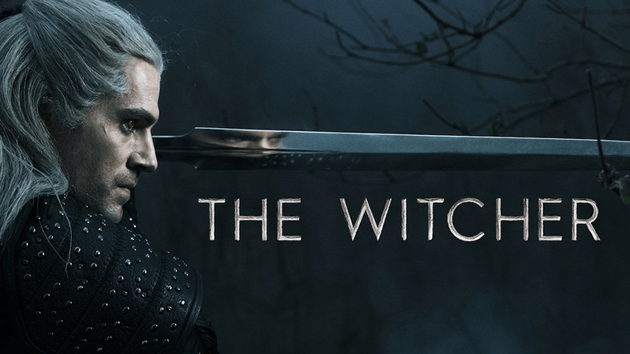
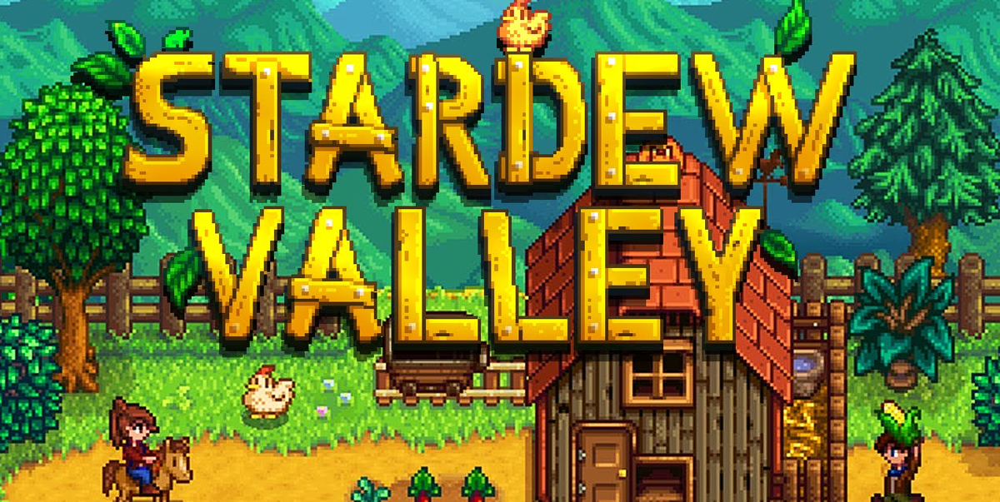
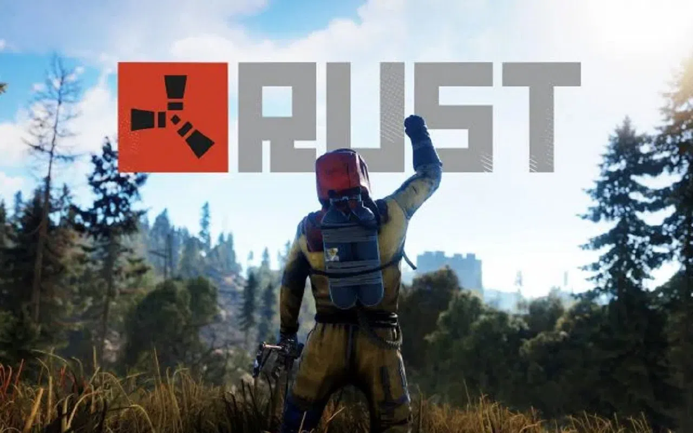
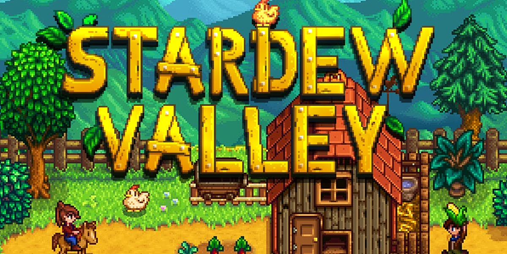
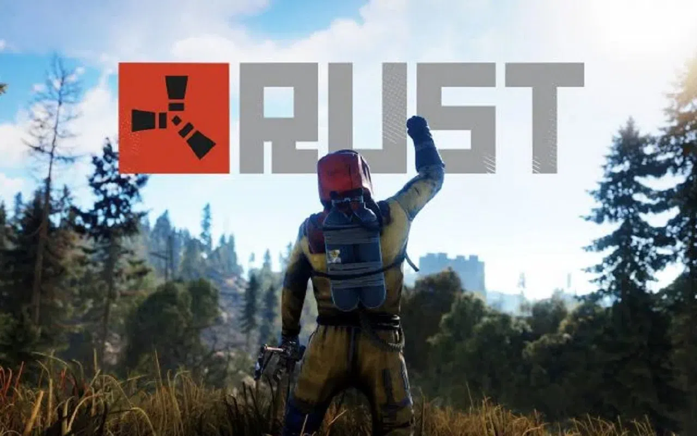

Ben Burak!
Doğduğumdan beri İstanbulda yaşıyorum. Satranç ve Bilgisayar oyunlarını severim. Yazılım ile alakalı yeni şeyler öğrenmek ilgimi çekiyor. Boş zamanlarımda sabahları bulunduğum ilçeden farklı ilçelere uzun yürüyüşler yapıyorum deniz ve müzik insana huzur veriyor. Futbol müsabakalarını takip ederim.
İstanbul
“Eğer dünya tek bir devletten ibaret olsaydı başkenti İstanbul olurdu.”
-Napoleon
Bonaparte
“İki büyük cihanın kesinti noktasında, Türk vatanının ziyneti, Türk tarihinin serveti, Türk milletinin
gözbebeği İstanbul, bütün vatandaşların kalbinde yeri olan şehirdir.”
- Mustafa
Kemal Atatürk
“Sokaklar boşalsın İstanbul'a öyle gireyim. Fânîlerin alkışları ve iltifâtları bizi nefsimize mağrûr
edip
yere sermesin.”
-
Yavuz
Sultan Selim
“Ya ben İstanbul’u fethederim, ya da İstanbul beni…”
- Fatih Sultan
Mehmet
“Dünyayı yok edelim demedim insanlığı azaltalım dedim. İstanbul yok olursa Dünya yok olur.”
- Şule Koç
Hobilerim
Boş zamanlarımda İstanbulu yürüyerek gezmeyi seviyorum. Bulundunduğum ilçeden diğer ilçelere yürüyerek
gidiyorum ve yürüyerek dönüyorum müzik ve denizin verdiği huzur yorulmamamı sağlıyor.
Satranç oynamayı seviyorum. Liseye giderken arkadaşlarımla satranç oynamayı çok seviyordum artık bu
işler de internet üzerinden oluyor. Günaşırı oynuyorum. Lichess profilim --> Profilim
Boş zamanlarımda arkadaşlarımla bilgisayar oyunları oynuyorum oynadığım birkaç oyun:

 

 



Topluluğum
MaviDurak-IO, yazılım sektörü çalışanları ve Sakarya Üniversitesi‘nde öğrenim gören öğrenciler tarafından Sakarya’da kurulmuş olan bir yazılım topluluğudur. Yazılım sektöründeki gelişmeleri yakından takip etmek, yeni bakış açıları keşfetmek, öğrendiklerimizi paylaşabilmek ve bildiklerimizi sorgulayabilmek amacıyla bir aradayız. Bu birlikteliğimizi güzel dostluklar ile pekiştirerek, bildiklerimizin üzerine koyabilmek ve daha fazlasını üretebilmek hedefini paylaşıyoruz.